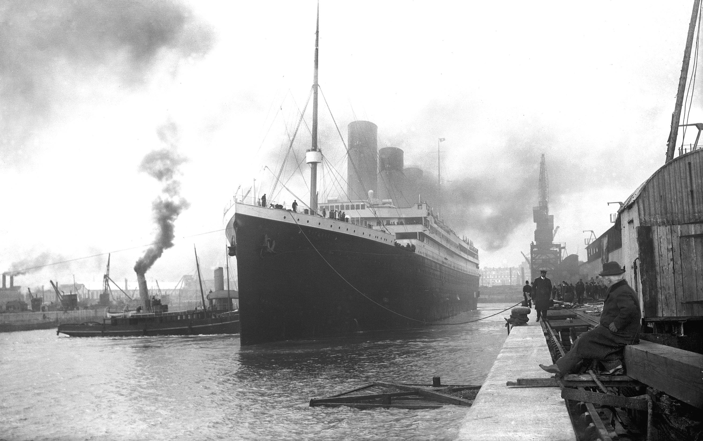

SOUTHAMPTON · 10 APRIL 1912
A ship built for a new age.
Titanic leaves Southampton on her maiden voyage. More than two thousand passengers and crew carry different tickets, families, duties, and expectations.
Historical photograph · public domain · Wikimedia Commons